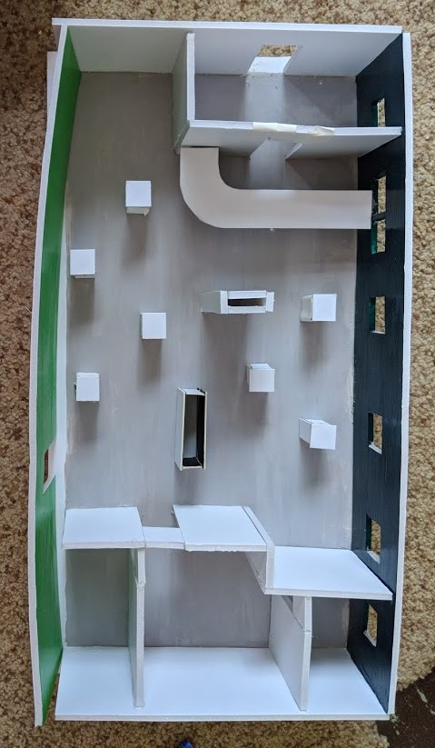

Abrielle Mason
User Experiencer


I am an undergraduate at Michigan State University majoring in computer science through the school of engineering and minoring in graphic design. I am passionate about design and technology which lends to my interests in UX/UI and frontend development. During university, I further developed my skillset through my internship as a full-stack software engineer at Target, my position as webmaster of MSU's ACM-W club, research, and personal projects.
I am a creative problem solver and motivated thinker with experience in fullstack developement. Interested in my experience? Check out my LinkedIn, Resume, and Github! Feel free to contact me via email.
Project Highlights
Interactive LED Board - Independent Study in User Experience

Write something abuot this experience: role, outcomes, what you learned, skills you attained.
On Monday, state government leaders announced a 12-day extension to the current state order that prohibits in-person classes for colleges and universities and continues restrictions on other indoor social gatherings and group activities. It is unclear if the order will be extended again beyond Dec. 20; however, as we have from the outset, we will remain flexible and continue adapting our plans as necessary.
From the beginning of the pandemic, health and safety have been our guiding principles for the difficult but necessary actions to address COVID-19, maintain operations and support your continued success at MSU. Like this fall — and most of 2020 — things on campus will look different during the spring as we implement additional safety measures to help ensure a successful semester and best protect each of you and our broader community.
Mid-Sure 2020 - Research on Email Addresses

Write something abuot this experience: role, outcomes, what you learned, skills you attained.
On Monday, state government leaders announced a 12-day extension to the current state order that prohibits in-person classes for colleges and universities and continues restrictions on other indoor social gatherings and group activities. It is unclear if the order will be extended again beyond Dec. 20; however, as we have from the outset, we will remain flexible and continue adapting our plans as necessary.
From the beginning of the pandemic, health and safety have been our guiding principles for the difficult but necessary actions to address COVID-19, maintain operations and support your continued success at MSU. Like this fall — and most of 2020 — things on campus will look different during the spring as we implement additional safety measures to help ensure a successful semester and best protect each of you and our broader community.
Rethinking Organization of Website Content - A Student Perspective

Write something abuot this experience: role, outcomes, what you learned, skills you attained.
On Monday, state government leaders announced a 12-day extension to the current state order that prohibits in-person classes for colleges and universities and continues restrictions on other indoor social gatherings and group activities. It is unclear if the order will be extended again beyond Dec. 20; however, as we have from the outset, we will remain flexible and continue adapting our plans as necessary.
From the beginning of the pandemic, health and safety have been our guiding principles for the difficult but necessary actions to address COVID-19, maintain operations and support your continued success at MSU. Like this fall — and most of 2020 — things on campus will look different during the spring as we implement additional safety measures to help ensure a successful semester and best protect each of you and our broader community.
Redesigning Physical Space - MSU Computer Center
Write something abuot this experience: role, outcomes, what you learned, skills you attained.
On Monday, state government leaders announced a 12-day extension to the current state order that prohibits in-person classes for colleges and universities and continues restrictions on other indoor social gatherings and group activities. It is unclear if the order will be extended again beyond Dec. 20; however, as we have from the outset, we will remain flexible and continue adapting our plans as necessary.
From the beginning of the pandemic, health and safety have been our guiding principles for the difficult but necessary actions to address COVID-19, maintain operations and support your continued success at MSU. Like this fall — and most of 2020 — things on campus will look different during the spring as we implement additional safety measures to help ensure a successful semester and best protect each of you and our broader community.